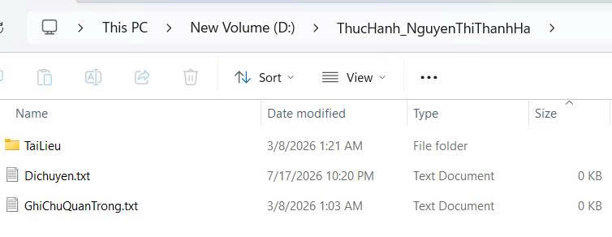
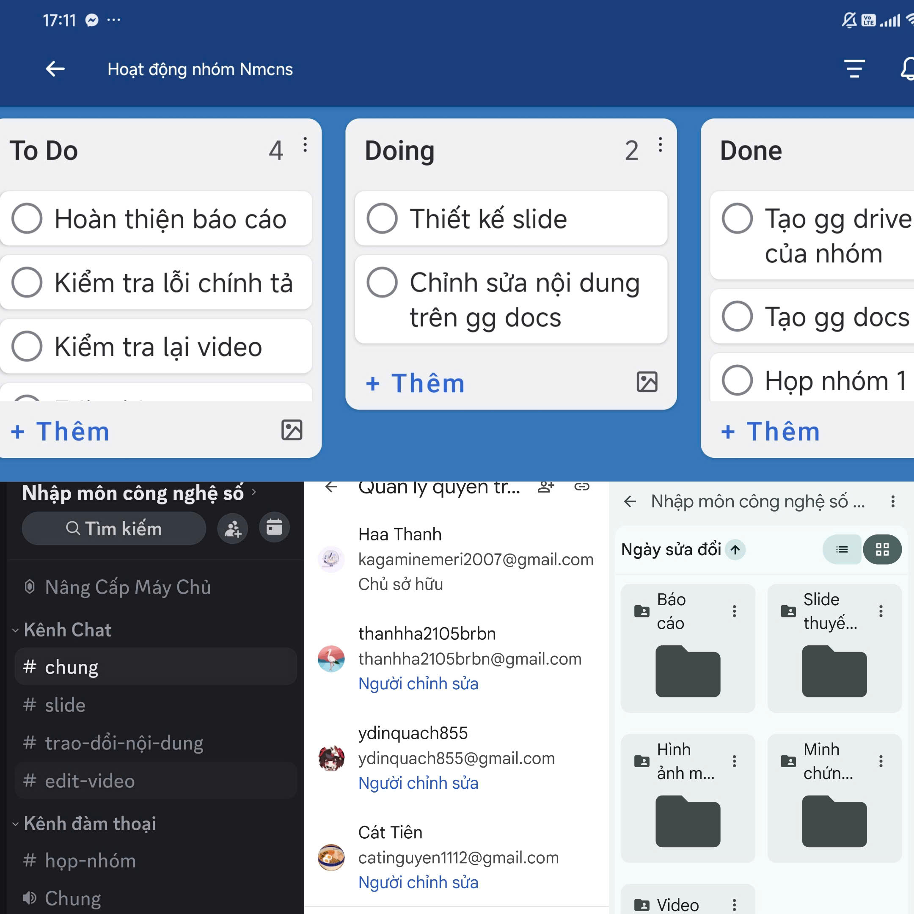

Nguyễn Thị Thanh Hà
Chào mừng bạn đến với Digital Portfolio của tớ! Tớ đang là sinh viên khoa Ngôn ngữ và Văn hóa Nhật Bản tại trường Đại học Ngoại ngữ - ĐHQGHN (ULIS). Đây là góc lưu trữ hành trình phiêu lưu và rèn luyện kỹ năng số hóa, kết hợp kiến thức công nghệ hiện đại với niềm yêu thích ngôn ngữ Nhật Bản ngọt ngào của tớ!
Mục tiêu thiết lập Portfolio
- Hệ thống hóa học tập: Tự rà soát, thiết kế và tổng hợp một cách logic nhất tất cả các kỹ năng công nghệ thực hành từ Bài 1 đến Bài 6 của học phần.
- Làm chủ công nghệ: Sử dụng thành thạo các trợ lý ảo AI để phục vụ trực tiếp cho quá trình nghiên cứu và tối ưu học tập ngoại ngữ.
- Ghi nhận trải nghiệm cá nhân: Đúc kết những góc nhìn trung thực nhất về ưu-khuyết điểm của các công cụ, từ đó rèn luyện liêm chính khoa học.
- Năng lực tương lai: Chuẩn bị hành trang tốt nhất cho một chiếc Digital Portfolio cá nhân, hỗ trợ đắc lực khi ứng tuyển học bổng hoặc việc làm sau này.
Quest Logs (Các bài thực hành)
Link Thư Mục Bài TậpBài 1: Quản lý tệp tin và cấu trúc thư mục tối ưu
Để bắt đầu một chặng đường học tập hiệu quả, tớ đã thực hiện chuẩn hóa toàn bộ kỹ năng thao tác quản lý tệp trên máy tính cá nhân. Việc tổ chức thư mục thông minh giúp bảo toàn dữ liệu và tối ưu thời gian tìm kiếm.
Windows + E trên bàn phím hoặc nhấp chuột vào biểu tượng thư mục màu vàng rực rỡ ở thanh tác vụ bên dưới màn hình.This PC, sau đó nhấp đúp để vào ổ đĩa học tập New Volume (D:) để lưu trữ thay vì lưu ở ổ đĩa hệ thống ổ C:.New -> Folder. Đặt tên thư mục chính xác của tớ là: ThucHanh_NguyenThiThanhHa rồi nhấn Enter để lưu lại.ThucHanh_NguyenThiThanhHa vừa tạo để bắt đầu xây dựng dữ liệu bên trong.New -> Text Document. Đặt tên mặc định ban đầu cho tệp tin này là GhiChu.txt và nhấn Enter.GhiChu.txt -> chọn biểu tượng hoặc mục Rename. Đổi tên tệp thành GhiChuQuanTrong.txt.New -> Folder, đặt tên thư mục con này là TaiLieu để chuẩn bị lưu trữ tài nguyên chuyên sâu.GhiChuQuanTrong.txt -> chọn Copy (hoặc bấm Ctrl + C). Nhấp đúp vào thư mục con TaiLieu, nhấp chuột phải vào khoảng trống và chọn Paste (hoặc bấm Ctrl + V).DiChuyen.txt. Nhấp chuột phải chọn Cut (hoặc bấm Ctrl + X). Nhấp đúp vào thư mục TaiLieu, nhấp chuột phải chọn Paste (hoặc bấm Ctrl + V). Tệp tin gốc ở ngoài đã được dời đi hoàn toàn.TaiLieu, tớ nhấp chuột phải vào tệp GhiChuQuanTrong.txt -> chọn Delete (hoặc nhấn phím Delete) để tệp tin được đưa vào Thùng rác dự phòng.DiChuyen.txt, nhấn và giữ phím Shift rồi ấn phím Delete. Một thông báo an toàn xuất hiện, tớ bấm xác nhận xóa vĩnh viễn tệp ra khỏi bộ nhớ máy tính mà không lưu lại Thùng rác.Recycle Bin và nhấp đúp để mở. Tìm tệp GhiChuQuanTrong.txt đã xóa ở Bước 10, nhấp chuột phải vào tệp và chọn Restore. Tệp lập tức quay trở lại vị trí gốc của nó bên trong thư mục TaiLieu một cách kì diệu!Ảnh minh chứng thực hành:

Bài học rút ra:
Thao tác cơ bản là nền móng của sự chuyên nghiệp. Khi rèn luyện hết 12 bước này, tớ hiểu sâu sắc cách máy tính quản lý bộ nhớ tạm, thùng rác, và thói quen đặt tên file không dấu gạch ngang giúp tránh lỗi đường dẫn khi học lập trình hoặc chạy thuật toán số hóa sau này.
Bài 2: Đánh giá độ tin cậy và phân tích tài liệu học thuật
Trong đợt nghiên cứu về chủ đề: "Ảnh hưởng của Anime đối với việc học tiếng Nhật của sinh viên quốc tế (tập trung vào kỹ năng nghe và động lực học tập)", tớ đã tra cứu 10 nguồn học thuật chuẩn Harvard và xếp hạng độ tin cậy để làm chất liệu viết báo cáo.
| STT | Nguồn tài liệu nghiên cứu (Chuẩn Harvard) | Tác giả (1-5) | Nguồn xuất bản (1-5) | Phương pháp (1-5) | Tính cập nhật (1-5) | Độ tin cậy | Nhận xét khoa học của Hà |
|---|---|---|---|---|---|---|---|
| 1 | Napier, S. (2005). Anime from Akira to Howl’s Moving Castle. Palgrave Macmillan. | 5 | 5 | 4 | 3 | Cao | Sách chuyên khảo cực kỳ uy tín, là nền tảng lý thuyết tuyệt vời để phân tích văn hóa đại chúng Nhật Bản. |
| 2 | Pellitteri, M. (2010). The Dragon and the Dazzle. Tunué. | 4 | 4 | 3 | 3 | Khá | Phân tích sâu sắc sự lan tỏa của Anime sang châu Âu, cung cấp góc nhìn toàn cầu hóa rõ nét. |
| 3 | Fukunaga, N. (2006). “Those Anime Students”. Journal of Adolescent & Adult Literacy, 50(3), pp. 206–222. | 5 | 5 | 5 | 3 | Cao | Nghiên cứu khoa học trực diện, sử dụng các dữ liệu thực nghiệm cực kỳ thuyết phục về hành vi người học. |
| 4 | Black, R. (2008). Adolescents and Online Fan Fiction. Peter Lang. | 4 | 4 | 4 | 5 | Khá cao | Rần liên quan đến cộng đồng học tập trực tuyến, thảo luận về cách giới trẻ tiếp thu ngôn ngữ qua các fanfiction. |
| 5 | Williams, J. (2017). “Anime and Language Learning Motivation”. Language Learning Journal, 45(2), pp. 123–135. | 5 | 5 | 5 | 5 | Rất cao | Nghiên cứu cực kỳ hiện đại, phương pháp khảo sát định lượng rõ ràng, đo lường chính xác động lực học sinh. |
| 6 | Krashen, S. (1985). The Input Hypothesis. Longman. | 5 | 5 | 4 | 2 | Khá cao | Dù xuất bản khá lâu nhưng đây là lý thuyết tiếp thu ngôn ngữ tự nhiên kinh điển nhất thế giới, cực kỳ giá trị. |
| 7 | Benson, P. (2011). Teaching and Researching Autonomy. Routledge. | 4 | 4 | 4 | 3 | Khá cao | Phân tích sâu sắc khía cạnh học tập tự chủ của sinh viên, phù hợp để lý giải hành vi xem Anime tự học ở nhà. |
| 8 | Kubota, R. (2015). “Japanese Culture and Language Learning”. Applied Linguistics Review, 6(3). | 4 | 5 | 4 | 4 | Khá cao | Góc nhìn học thuật sâu sắc về văn hóa giao tiếp và tư duy xã hội Nhật Bản trong thế giới đương đại. |
| 9 | Ito, M. (2012). “Anime Fans and Learning Practices”. Cultural Studies Review. | 4 | 4 | 4 | 3 | Khá cao | Phân tích hành vi xã hội của các cộng đồng hâm mộ Anime, hỗ trợ lý giải về động lực học nhóm ngoại khóa. |
| 10 | Godwin-Jones, R. (2018). “Using Media for Language Learning”. Language Learning & Technology. | 5 | 5 | 5 | 5 | Rất cao | Phân tích tối tân về việc ứng dụng công nghệ đa phương tiện để đột phá khả năng tiếp thu ngôn ngữ tự nhiên. |
Bài học rút ra:
Qua bài này, tớ hiểu ra rằng một tài liệu cũ không hẳn là bỏ đi (như lý thuyết Krashen 1985 cực kỳ giá trị) nhưng để nghiên cứu thuyết phục nhất, ta bắt buộc phải liên tục kết hợp với tài liệu mới tinh có tính cập nhật cao (như nghiên cứu năm 2018 của Godwin-Jones) để có góc nhìn toàn diện nhất.
Bài 3: Ứng dụng Prompt Engineering thiết kế tác vụ học tập hiệu quả
Chất lượng câu trả lời của AI phụ thuộc hoàn toàn vào tư duy thiết kế Prompt của bạn. Dưới đây là 3 kịch bản thực nghiệm tớ đã thực hiện để so sánh chất lượng đầu ra một cách trực quan nhất.
Hãy bấm thử các Tab để khám phá các cấp độ Prompt của Hà:
Bài học rút ra:
Tớ đúc kết được rằng: Không phải Prompt càng dài thì AI trả lời càng tốt. Điều cốt lộ là cấu trúc câu lệnh phải đáp ứng các nguyên tắc cơ bản: Role Prompting (đóng vai), Constraint Prompting (ràng buộc rõ về độ dài, ngôn ngữ) và Structured Prompting (quy định rõ các đầu mục hiển thị). Khi áp dụng đủ, kết quả của AI sẽ vượt trội và không bao giờ bị trả lời lan man!
Bài 4: Hợp tác trực tuyến và Nhật ký hành trình trưởng nhóm
Trong đợt làm bài tập lớn về đề tài "Ứng dụng của AI trong học ngoại ngữ và giáo dục", tớ đã đảm nhận vai trò Nhóm trưởng. Hãy cùng khám phá nhật ký hành trình 1 tuần của nhóm tớ nhé!
Nhật ký hoạt động nhóm 1 tuần:
Ảnh minh chứng hoạt động nhóm:

Thuận lợi gặt hái:
Sự kết hợp đồng bộ giữa các công cụ giúp tớ không bị thất lạc file, dễ dàng biết thành viên nào đang làm gì qua Trello và Google Docs. Khả năng làm việc đồng thời tiết kiệm đến 50% thời gian họp trực tiếp.
Khó khăn vấp phải:
Do lịch học của mỗi bạn khác nhau nên khó tìm ra giờ họp nhóm chung trên Discord. Khi có quá nhiều người cùng chỉnh sửa Google Docs một lúc, bố cục văn bản đôi khi bị xáo trộn nhẹ và chất lượng kết nối Internet đôi bạn chưa ổn định.
Bài học rút ra & Đề xuất cải tiến:
Bài học: Làm trưởng nhóm cần linh hoạt và đưa ra deadline sớm hơn kế hoạch thực tế 2 ngày để dự phòng rủi ro.
Đề xuất: Đối với các dự án tương lai, cần quy định thống nhất cách đặt tên file trên Drive ngay từ đầu và lên lịch họp nhóm cố định vào một buổi tối trong tuần để mọi người dễ sắp xếp thời gian.
Bài 5: Sáng tạo nội dung truyền thông đỉnh cao cùng Generative AI
Hành trình biến ý tưởng thô sơ thành bài thuyết trình văn hóa sinh động nhờ sự kết hợp giữa óc thẩm mỹ của con người và năng lực sáng tạo vô hạn của AI tạo sinh.
Bảng so sánh các công cụ AI đã trải nghiệm:
| Tiêu chí đánh giá | ChatGPT (Văn bản) | Leonardo AI (Hình ảnh) | Canva AI (Thiết kế) |
|---|---|---|---|
| Năng lực tạo nội dung | Xuất sắc | Thấp | Khá |
| Năng lực tạo hình ảnh | Thấp | Xuất sắc | Tốt |
| Tối ưu hóa thiết kế Slide | Khá | Khá | Xuất sắc |
| Độ thân thiện & Dễ sử dụng | Xuất sắc | Tốt (Cần học câu lệnh) | Xuất sắc |
| Độ tương thích dự án | Rất cao | Cao | Rất cao |
Điểm AI làm cực tốt:
Tăng tốc độ lên dàn ý và dịch thuật ngữ Việt - Nhật nhanh chóng. Tạo ra các hình ảnh minh họa tranh màu nước Quan họ Bắc Ninh tinh tế, đẹp mắt và đồng bộ về phong cách nghệ thuật cổ kính.
Điểm hạn chế cần sửa đổi:
AI đôi khi dùng từ vựng tiếng Nhật quá trang trọng hoặc quá học thuật, vượt ngoài trình độ mục tiêu N5-N4 của người học. Ngoài ra, hình ảnh Leonardo vẽ áo tứ thân và nón ba tầm đôi lúc bị nhầm sang trang phục các nước lân cận, bắt buộc tớ phải chỉnh sửa thủ công.
Sự thay đổi quy trình sáng tạo:
Trước đây, tớ phải mất 3 ngày tự tìm tư liệu, dịch thô, tự vẽ hoặc tìm ảnh mạng không đồng bộ rồi loay hoay căn chỉnh slide.
Giờ đây với AI, quy trình lên ý tưởng và thiết kế thô chỉ mất vỏn vẹn 30 phút! Tớ dành trọn vẹn 90% thời gian còn lại để tập trung biên tập thông tin chuyên sâu, tinh chỉnh thuật ngữ và trau chuốt nội dung thuyết trình mượt mà nhất.
Sản phẩm Infographic truyền thông sáng tạo:
Bài 6: Liêm chính học thuật và Sử dụng AI có trách nhiệm
Công nghệ là một người đầy tớ tốt nhưng là một người chủ tồi. Là sinh viên ULIS, tớ luôn tâm niệm việc sử dụng AI là để nâng cao chứ không phải thay thế năng lực tự thân.
Ranh giới giữa hỗ trợ hợp lý và gian lận học thuật:
Tớ nhận thấy các trường đại học hàng đầu, đặc biệt là ULIS, luôn khuyến khích sinh viên sử dụng AI để gợi mở ý tưởng, kiểm tra ngữ pháp hoặc dịch thuật ngữ. Tuy nhiên, việc copy nguyên xi bài viết do AI tạo ra rồi nộp lên hệ thống là hành vi gian lận và đánh mất đi cơ hội tự học tự rèn luyện của bản thân.
Ví dụ điển hình:
- Hợp lý: Dùng ChatGPT rà soát lỗi chính tả, gợi ý cách hành văn tiếng Nhật tự nhiên hơn.
- Gian lận: Gõ lệnh bắt AI viết cả bài tiểu luận tiếng Nhật 1000 từ rồi sao chép nộp nguyên bản.
7 nguyên tắc vàng sử dụng AI có trách nhiệm của Hà:
- Nguyên tắc 1: Chỉ sử dụng AI như một trợ lý thông thái hỗ trợ tư duy cá nhân; tuyệt đối không để công cụ làm mòn khả năng tự suy luận của mình.
- Nguyên tắc 2: Luôn rà soát và kiểm chứng lại độ chính xác của mọi thông tin do AI cung cấp trước khi đưa vào các sản phẩm học thuật chính thức.
- Nguyên tắc 3: Tuyệt đối nói không với việc sao chép nguyên bản đầu ra của AI để nộp bài làm cá nhân.
- Nguyên tắc 4: Luôn minh bạch và trung thực ghi chú, khai báo mức độ sử dụng các công cụ AI trong quá trình hoàn thiện bài tập lớn.
- Nguyên tắc 5: Tôn trọng quyền sở hữu trí tuệ đối với các hình ảnh, tài liệu được AI gợi ý, luôn trích dẫn nguồn gốc đầy đủ rõ ràng.
- Nguyên tắc 6: Tuyệt đối không upload các thông tin mật cá nhân, thông tin bảo mật của nhà trường hay của người khác lên máy chủ công cộng của AI.
- Nguyên tắc 7: Tập trung sử dụng AI để mở rộng thế giới quan, rèn luyện thói quen tự học trọn đời thay vì rơi vào bẫy lười biếng, phụ thuộc công cụ.
Tổng kết hành trình rèn luyện Portfolio
Những thuận lợi đạt được:
Khóa học đã giúp tớ bước ra khỏi vùng an toàn của một sinh viên ngoại ngữ truyền thống để tiếp cận tư duy số hóa hiện đại. Việc tự tay thiết lập một chiếc Digital Portfolio giúp tớ hệ thống hóa toàn bộ kiến thức một cách khoa học, hiểu rõ ưu điểm của từng công cụ AI và tự tin hơn trong các dự án công nghệ tương lai.
Bài học xương máu rút ra:
Bài học giá trị nhất mà tớ đúc kết được chính là: Công nghệ chỉ mạnh mẽ nhất khi kết hợp với tư duy phản biện của con người. AI có thể viết văn rất nhanh, vẽ tranh rất đẹp, nhưng chính sự kiểm chứng tỉ mỉ, tính liêm chính và tình yêu văn hóa của người học mới là yếu tố quyết định tạo nên một sản phẩm học tập giá trị đích thực.